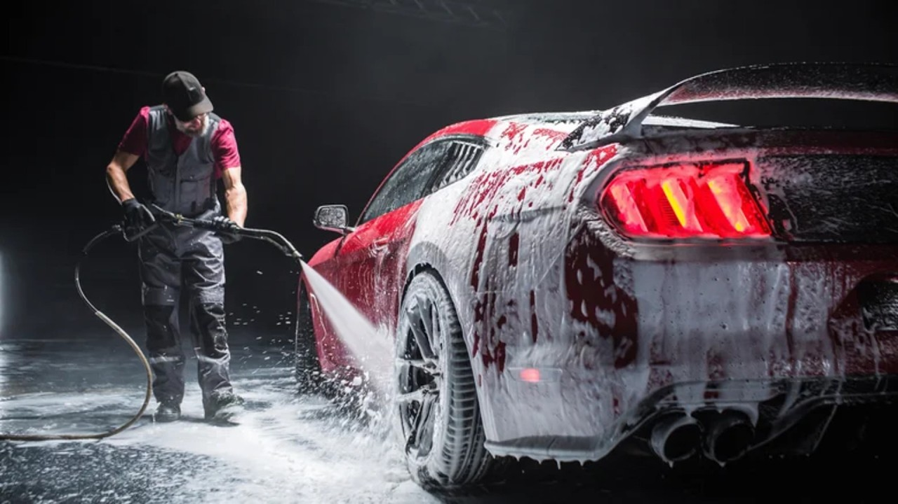
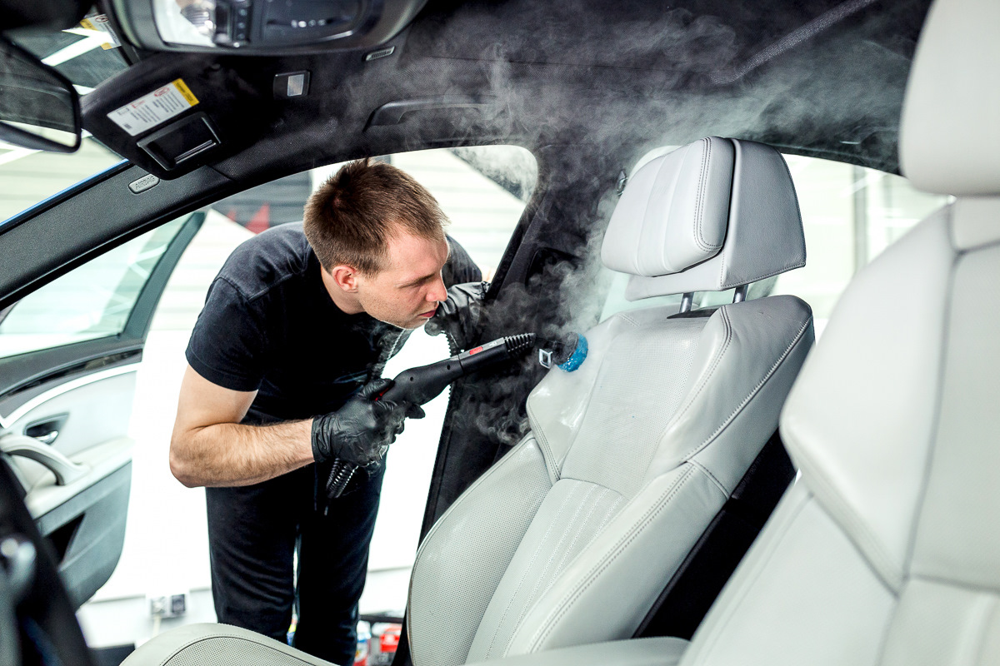
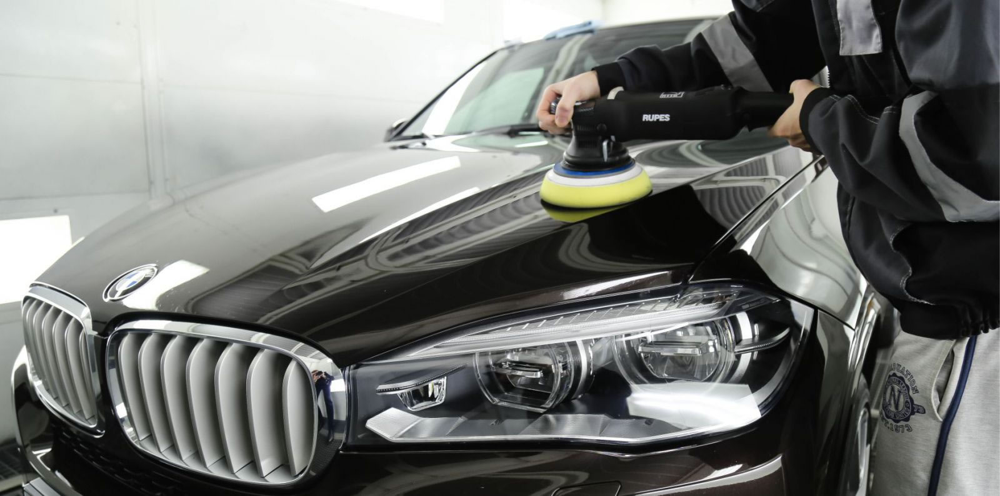
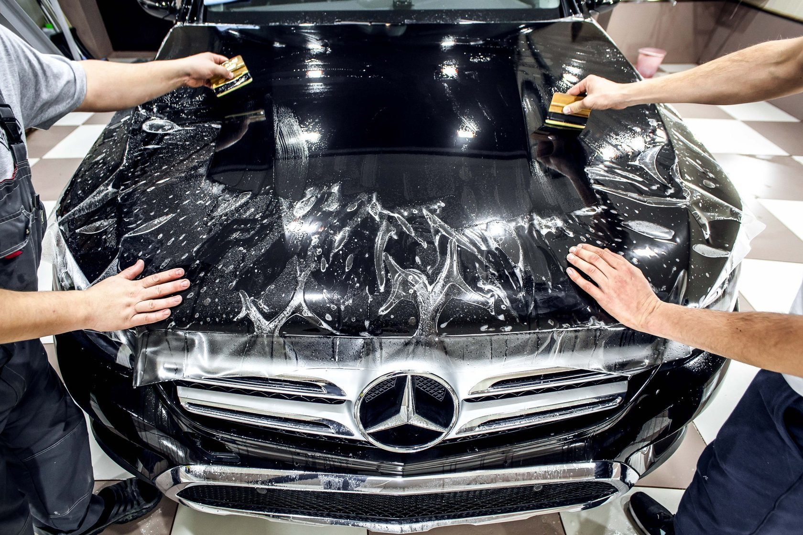

Комплексная мойка
Двухфазная бесконтактная мойка кузова, очистка колёс и арок, продувка и сушка микрофиброй, чернение резины. Бережно удаляет грязь без риска для ЛКП.
Продолжительность 2 часа

Химчистка салона
Глубокая очистка текстиля, кожи, пластика и потолка профессиональными составами. Удаление пятен, запахов, разводов; финишная защита материалов.
Продолжительность 4-6 часов

Полировка кузова
Восстановительная полировка в 2–3 этапа: убираем мелкие царапины, голограммы и матовость, возвращаем глубину цвета и зеркальный блеск.
Продолжительность 6-8 часов

Керамическое покрытие
Нанесение керамики 9H после подготовки кузова. Защита от реагентов, УФ и мелких загрязнений, гидрофобный эффект и стойкий блеск.
Продолжительность 2–3 дня (с полировкой)

Оклейка защитной плёнкой
Проклейка зон риска (капот, бампер, зеркала, пороги) прозрачной полиуретановой плёнкой. Защита ЛКП от сколов, песка и гравия.
Продолжительность 1-2 дня
